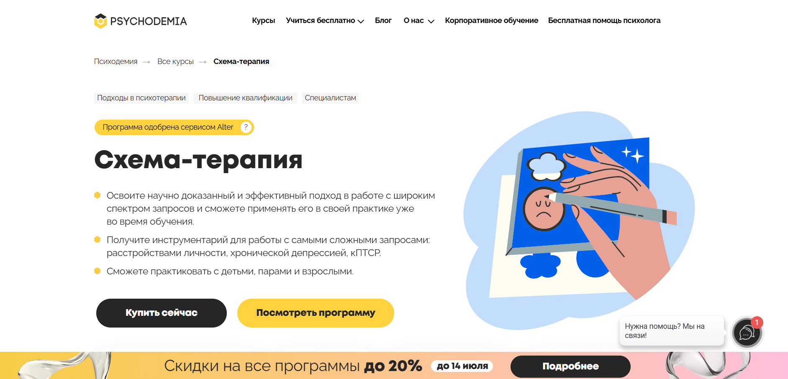
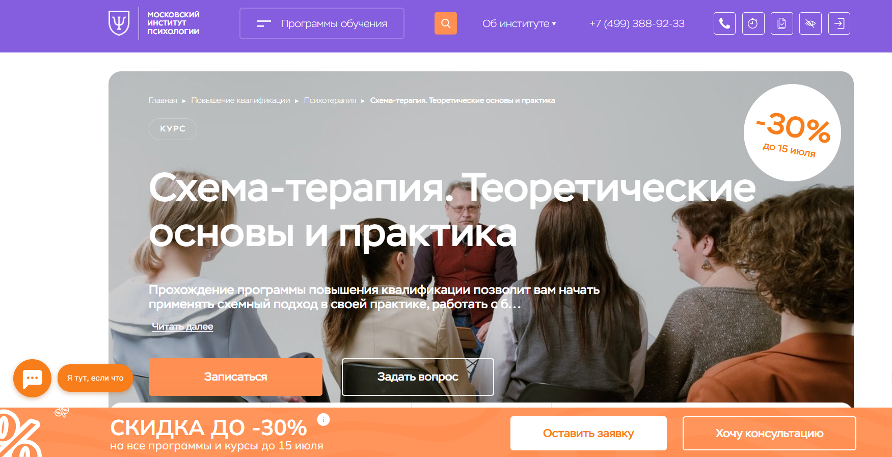
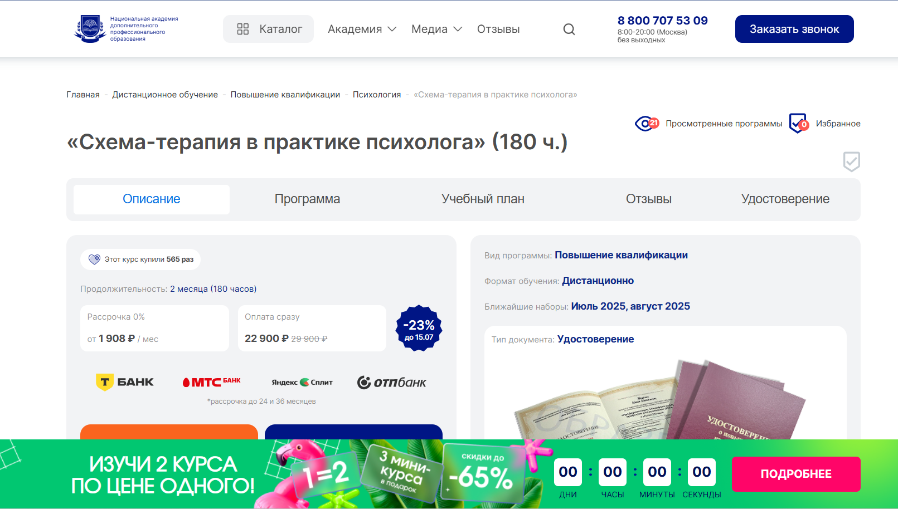
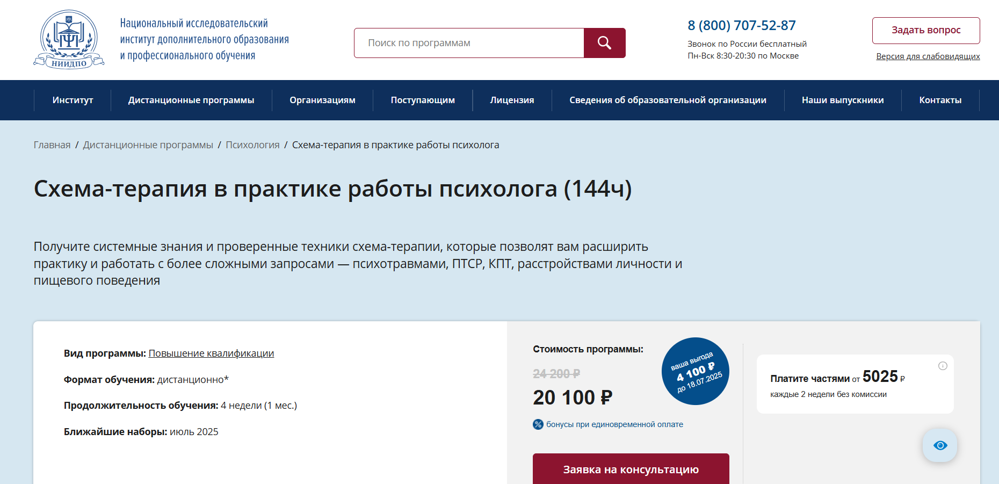
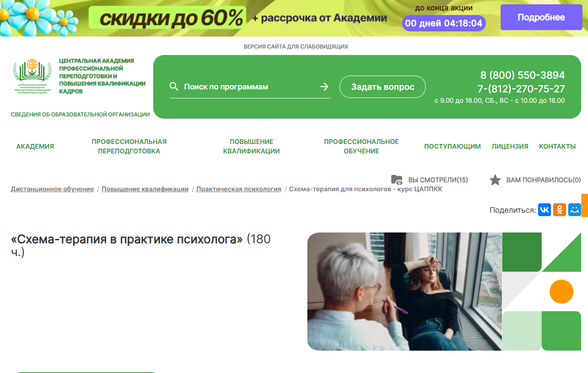
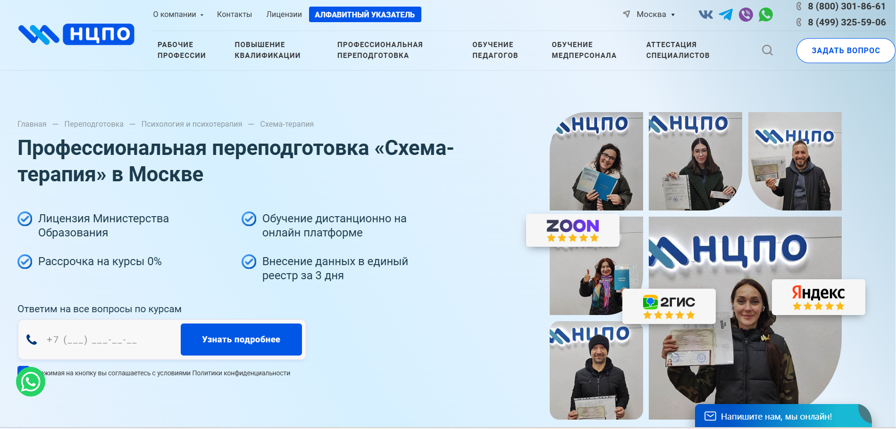
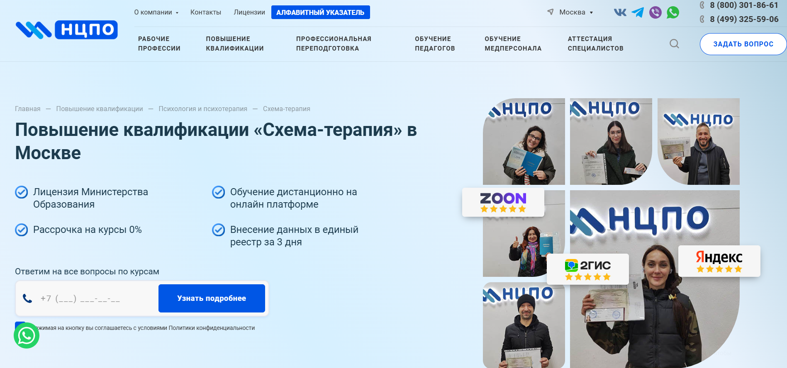
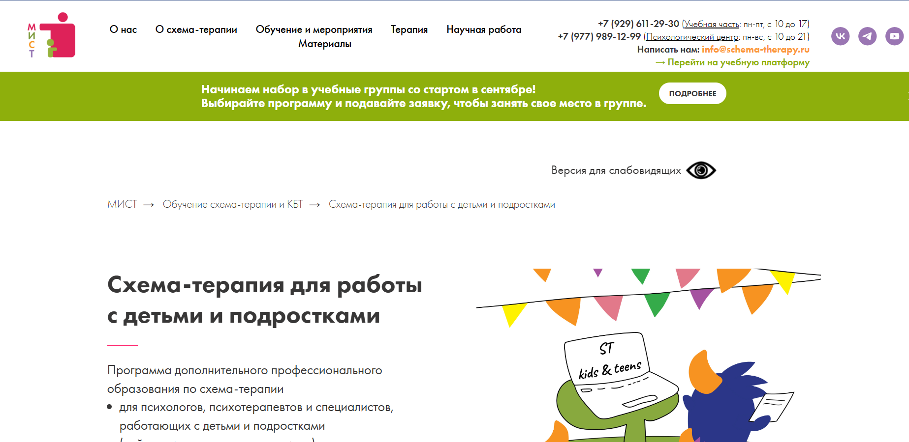
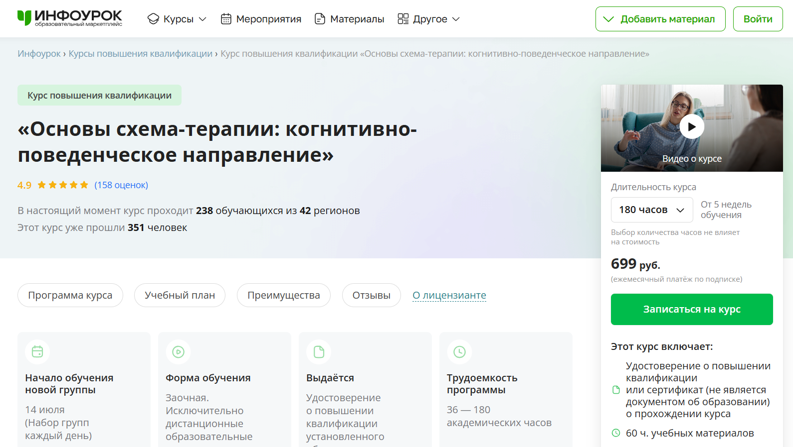

Схема-терапия — это направление когнитивно-поведенческой психотерапии, направленное на работу с ранними дезадаптивными схемами, которые формируются под влиянием неудовлетворённых эмоциональных потребностей в детстве. Обучение по схема-терапии позволяет психологам освоить эффективные методы психотерапии, включающие техники активации схем, работу с негативными схемами и режимами. Мы составили рейтинг программ профессиональной переподготовки и курсов повышения квалификации, которые доступны в дистанционном формате. В процессе обучения слушатели изучают методы схема-терапии, получают практические навыки и знания, необходимые для работы с психологическими расстройствами. По завершении обучения выдаются удостоверения или дипломы установленного образца.
Информация обновлена:
ТОП онлайн-программ обучения методике "Схема-терапия"
- 🏆 Схема-терапия – Психодемия (по промокоду OnlineKursy действует скидка 🎁 5000 руб)
- 🏆 Схема-терапия. Теоретические основы и практика – Московский институт психологии (по промокоду kursy скидка 🎁 10%)
- 🏆 Схема-терапия в практике психолога – НАДПО (по промокоду onlinekursy действует скидка 🎁 5%)
- Схема-терапия в практике работы психолога – АНО «НИИДПО»
- Схема-терапия в практике психолога – ЦАППКК (по промокоду onlinekursy действует скидка 🎁 5%)
- Схема-терапия, переподготовка – Учебный центр «НЦПО»
- Схема-терапия, повышение квалификации – Учебный центр «НЦПО»
- Схема-терапия для работы с детьми и подростками – Институт Схема-Терапии
- Основы схема-терапии: когнитивно-поведенческое направление – Инфоурок
Отличительные преимущества каждой дистанционной программы обучения по методике "Схема-терапия"
| # | Название курса и школа | Отличительные преимущества | |
|---|---|---|---|
| 🥇 | Схема-терапия – Психодемия | Глубокая проработка схем, практика в тройках, демо-сессии, 252–297 ак.ч., обучение от сертифицированного ISST-терапевта | Перейти |
| 🥈 | Схема-терапия. Теоретические основы и практика – МИП | Программа с упором на концептуализацию, замещающее родительство, 72 ак.ч., кураторская поддержка, сексолог в составе преподавателей | Перейти |
| 🥉 | Схема-терапия в практике психолога – НАДПО | Зарегистрировано в ФИС ФРДО, 180 ак.ч., доступ к ЛитРес, акцент на онлайн-консультирование, низкая цена | Перейти |
| 4 | Схема-терапия в практике работы психолога – АНО «НИИДПО» | Краткосрочный (4 недели), обратная связь, доступ к 13 000+ вебинарам, работа с пищевыми расстройствами и ПТСР | Перейти |
| 5 | Схема-терапия в практике психолога – ЦАППКК | Гибкий формат, бессрочный доступ к материалам, сочетание КПТ, гештальта и транзактного анализа | Перейти |
| 6 | Схема-терапия, переподготовка – НЦПО | До 1600 ак.ч., диплом о проф. переподготовке, круглосуточный доступ, подходит для смены профессии | Перейти |
| 7 | Схема-терапия, повышение квалификации – НЦПО | Курс от 72 ак.ч., срочная выдача удостоверения, регистрация в ФИС ФРДО, обучение с 900 ₽/мес | Перейти |
| 8 | Схема-терапия для работы с детьми и подростками – Институт Схема-Терапии | Узкая специализация на детско-подростковой терапии, участие родителей, карта семьи, живая супервизия | Перейти |
| 9 | Основы схема-терапии: когнитивно-поведенческое направление – Инфоурок | Минимальная цена (от 699 ₽/мес), гибкий график, не требует профильного образования | Перейти |
1. 🏆 Схема-терапия – Психодемия
- ✅ Официальный сайт: psychodemia.ru
- 💸 Цена обучения: от 132 250 ₽
- 💳 Рассрочка: 18 месяцев, от 7 347 ₽ в месяц
- 📚 Формат: видеолекции, домашние задания, супервизии, сессии «вопрос-ответ», практика в тройках, анализ демо-сессий
- ⏳ Продолжительность: от 6 месяцев, 252–297 ак. часов
- 📜 Документ: удостоверение о повышении квалификации установленного образца
- 📝 Трудоустройство: помощь в применении полученных знаний в практике, поддержка сообщества
- 🔷 Для кого подходит курс: практикующим и начинающим психологам с профильным образованием, специалистам в области психотерапии
Особенности:
Программа основана на научно подтвержденных методах когнитивно-поведенческой психотерапии и дополнена новыми техниками схема-терапии. Подходит для дистанционного обучения и позволяет практиковать уже во время учебы. Студенты осваивают работу с ранними дезадаптивными схемами, учатся распознавать режимы и выстраивать терапию в зависимости от состояния клиента. Обучение включает комплексную проработку когнитивных, эмоциональных и поведенческих аспектов. Уделяется внимание детской, парной и взрослой терапии. Завершив обучение, выпускники получают документ о повышении квалификации и могут использовать профессиональные навыки в широкой практике.
Чему учатся студенты:
- Диагностировать расстройства личности и устойчивые психологические паттерны
- Проводить концептуализацию случая и составлять терапевтический план
- Работать с негативными схемами и ограничивающими убеждениями
- Применять техники: эмпатическая конфронтация, работа со стульями, сторителлинг
- Прорабатывать эмоциональные потребности клиента на всех уровнях
- Анализировать поведение и схемы, сформированные ранним опытом
- Применять когнитивно-поведенческие и экспериенциальные техники
Преподаватели:
- Александра Романовская — клинический психолог, научный руководитель курса, сертифицированный схема-терапевт ISST, ЭФТ-терапевт, опыт более 11 лет
Преимущества:
- Дистанционный формат подходит для специалистов из любого региона
- Обширная практика и супервизии с преподавателями
- Выдаются удостоверения установленного образца
- Программа одобрена Alter и соответствует требованиям профессиональных стандартов
- Подходит для работы с клиентами всех возрастов: от детей до взрослых
- Обучение позволяет углубить понимание дезадаптивных схем и их коррекции
- Возможность практики уже в процессе обучения
- Инструментарий включает диагностические опросники и дополнительные терапевтические материалы
Отзывы учеников:
Студенты отмечают удобный дистанционный формат и практическую направленность. Часто хвалят объемную методическую базу, поддержку преподавателей и возможность применения техник в реальной практике уже во время курса. Многим особенно полезными кажутся навыки работы с эмоциональной регуляцией и концептуализацией клиентов с тяжелыми случаями.
Перейти на официальный сайт курса2. 🏆 Схема-терапия. Теоретические основы и практика – Московский институт психологии

- ✅ Официальный сайт: mip.institute
- 💸 Цена обучения: уточняется с учетом действующей скидки до 30%
- 💳 Рассрочка: возможна, подробности уточняются у приемной комиссии.
- 📚 Формат: дистанционный формат с применением онлайн-лекций, тестов, практических заданий, интервизий, супервизий, демонстрационных сессий и разборов кейсов.
- ⏳ Продолжительность: 2 месяца (72 академических часа).
- 📜 Документ: выдается удостоверение о повышении квалификации государственного образца.
- 📝 Трудоустройство: курс помогает официально подтвердить квалификацию и расширить сферу практики.
- 🔷 Для кого подходит курс: начинающим специалистам, практикующим психологам, тем, кто хочет применять методы когнитивно-поведенческой терапии в личной или профессиональной практике.
Особенности:
Программа подходит для специалистов, заинтересованных в изучении методов схема-терапии и интеграции их в психологическую практику. Обучение проводится в дистанционном формате с поддержкой кураторов и преподавателей. Курсы повышения квалификации включают реальную практику, ориентированную на работу с негативными и ранними дезадаптивными схемами. Участники изучают техники когнитивно-поведенческой психотерапии, эффективные способы взаимодействия с клиентами, и получают доступ к профессиональному сообществу. Курс завершает итоговая аттестация и выдача удостоверения, подтверждающего полученные знания и навыки.
Чему учатся студенты:
- Диагностике ранней дезадаптивной схемы и режимов поведения
- Проведению концептуализации клиентских кейсов
- Использованию техник ограниченного замещающего родительства
- Работе с травмой и негативными воспоминаниями
- Активации здоровых режимов и конфронтации с дезадаптивными
- Применению техник когнитивно-поведенческой терапии
Преподаватели:
- Леонов Михаил Михайлович — кандидат биологических наук, клинический психолог, когнитивно-поведенческий и схема-терапевт, сексолог
Преимущества:
- Обучение в дистанционном формате с возможностью совмещения с работой
- Выдается удостоверение о повышении квалификации
- Программа охватывает все базовые эмоциональные потребности и схемы
- Формируется практический опыт взаимодействия с клиентами
- Участие в супервизиях и интервизиях с экспертами
- Доступ к обширной библиотеке учебных материалов
- Поддержка куратора и обратная связь от преподавателей
- Диплом ценится как в России, так и за рубежом
Отзывы учеников:
Выпускники курсов отмечают эффективность обучающих методов и удобный формат прохождения программы. Многие подчеркивают, что полученные профессиональные знания и навыки помогают клиенту быстрее решать личные запросы. Студенты положительно отзываются о поддержке кураторов и высоком качестве образовательного процесса.
Перейти на официальный сайт курса3. 🏆 Схема-терапия в практике психолога – Национальная академия дополнительного профессионального образования

- ✅ Официальный сайт: nadpo.ru
- 💸 Цена: 22 900 ₽ (скидка, ранее 29 900 ₽)
- 💳 Рассрочка: от 1 908 ₽/мес, возможна до 36 месяцев
- 📚 Формат: дистанционное обучение, видеолекции, тесты, доступ к библиотекам ЛитРес и БиблиоКлуб
- ⏳ Продолжительность: 2 месяца (180 академических часов)
- 📜 Документ: удостоверение о повышении квалификации, внесено в реестр ФИС ФРДО
- 📝 Трудоустройство: развитие профессиональных навыков и монетизация через индивидуальное и онлайн-консультирование
- 🔷 Для кого подходит курс: практикующие психологи, специалисты в области когнитивно-поведенческой терапии, консультанты
Особенности:
Программа повышения квалификации ориентирована на освоение методов схема-терапии в дистанционном формате. Обучение построено на современных подходах когнитивно-поведенческой психотерапии и включает практические техники работы с ранними дезадаптивными схемами. Слушатели изучают эффективные методы диагностики и трансформации негативных схем, развивают профессиональные знания для консультирования при эмоциональных нарушениях. После завершения обучения выдаются удостоверения, документы вносятся в государственный реестр. Благодаря удобному формату студенты могут проходить обучение без отрыва от работы.
Чему учатся студенты:
- Применять методы схема-терапии в психологической практике
- Анализировать дезадаптивные схемы и поведенческие паттерны
- Работать с эмоциональными потребностями клиентов
- Использовать техники когнитивно-поведенческой терапии
- Развивать профессиональные навыки для онлайн и очного консультирования
Преподаватели:
- Информация о преподавателях отсутствует на сайте
Преимущества:
- Выдается удостоверение, зарегистрированное в ФИС ФРДО
- Курс прошли более 500 специалистов
- Доступ к учебным материалам и библиотекам
- Удобный дистанционный формат обучения
- Возможность рассрочки без переплат
- Поддержка эмоциональных и профессиональных потребностей слушателей
- Актуальные техники когнитивно-поведенческой терапии
- Обучение помогает клиенту при сложных психологических расстройствах
Отзывы учеников:
Студенты отмечают удобство дистанционного формата и насыщенность учебного процесса. Положительно оценивают практическую направленность программы, доступность материалов и возможность применять полученные знания в работе с клиентами. Большим плюсом называют государственную регистрацию удостоверений и прозрачные условия рассрочки.
Перейти на официальный сайт курса4. Схема-терапия в практике работы психолога – АНО «НИИДПО»
- ✅ Официальный сайт: niidpo.ru
- 💸 Цена: 24 200 ₽ (20 100 ₽ по скидке)
- 💳 Рассрочка: от 5025 ₽ каждые 2 недели без комиссии
- 📚 Формат: дистанционный формат, видеолекции, практические задания, кейсы, тесты, вебинары
- ⏳ Продолжительность: 4 недели
- 📜 Документ: удостоверение о повышении квалификации
- 📝 Трудоустройство: возможность работать в частной практике, в центрах психического здоровья, учреждениях образования и соцслужбах
- 🔷 Для кого подходит курс: практикующие и начинающие психологи, специалисты смежных профессий, заинтересованные в развитии навыков психотерапии
Особенности:
Программа разработана в соответствии с требованиями профстандарта «Психолог-консультант» и включает элементы когнитивно-поведенческой терапии и других направлений. Слушатели изучают методы схема-терапии, позволяющие работать с дезадаптивными схемами, ранними травмами, расстройствами личности и пищевого поведения. Благодаря дистанционному обучению участники могут изучать материал в удобное время без привязки к расписанию. Доступ к материалам сохраняется даже после завершения обучения. Программа также включает участие в открытых супервизиях и индивидуальную обратную связь от преподавателей.
Чему учатся студенты:
- Пониманию и диагностике базовых эмоциональных потребностей клиента
- Выявлению и работе с ранней дезадаптивной схемой и режимами
- Активации схем и эффективной реакции на них
- Применению техник схема-терапии: замещающее родительство, рефлексивные практики
- Конструированию терапевтических сессий на основе когнитивно-поведенческой психотерапии
- Работе с тревожностью, ПТСР, нарушениями пищевого поведения и личностными расстройствами
Преподаватели:
- Басин Максим Александрович — кандидат психологических наук
- Богданова Наталья Александровна — кандидат психологических наук
- Буншафт Елена Николаевна — кандидат педагогических наук
Преимущества:
- Форма обучения — дистанционная, без отрыва от работы
- Сертифицированное удостоверение по окончании курса
- Практические задания с проверкой и индивидуальной обратной связью
- Доступ к 13 000+ записям вебинаров и онлайн-архиву
- Ежемесячные вебинары от экспертов с сертификатами
- Курс основан на ФГОС и актуальных профессиональных стандартах
- Возможность профессионального роста и расширения практики
- Проработка личных дезадаптивных паттернов в процессе обучения
Отзывы учеников:
Выпускники курса часто отмечают высокое качество дистанционного образования, системность материала и его практическую направленность. Особенно выделяют удобный формат обучения, обилие примеров и обратную связь от преподавателей. Многие подчеркивают, что прошли обучение без трудностей и успешно внедрили полученные знания в психологическую практику.
Перейти на официальный сайт курса5. Схема-терапия в практике психолога – Центральная академия профессиональной переподготовки и повышения квалификации кадров

- ✅ Официальный сайт: appkk.ru
- 💸 Цена: 20 700 ₽ (скидка от полной стоимости 27 000 ₽)
- 💳 Рассрочка: от 1 725 ₽/мес. на 12 месяцев, без переплат
- 📚 Формат: дистанционное обучение: заочные занятия с применением дистанционных технологий, доступ к библиотеке вебинаров, поддержка с 9:00 до 21:00 без выходных
- ⏳ Продолжительность: 2 месяца (180 академических часов)
- 📜 Документ: удостоверение о повышении квалификации, вносится в ФИС ФРДО
- 📝 Трудоустройство: можно применять в частной или государственной психологической практике
- 🔷 Для кого подходит курс: начинающим и практикующим психологам, психотерапевтам, специалистам по травмам, клиническим психологам
Особенности:
Программа разработана для освоения методов схема-терапии, которые применяются в работе с дезадаптивными схемами, сформированными ранним опытом. Обучение проходит в дистанционном формате, с удобным графиком для совмещения с работой. Курс основан на когнитивно-поведенческой терапии, гештальт-подходе и транзактном анализе. Студенты получают бессрочный доступ к материалам и профессиональную поддержку. Все документы об обучении проходят регистрацию в официальном государственном реестре. Актуальные методики помогают клиенту в решении психологических проблем, связанных с негативными установками и базовыми эмоциональными потребностями.
Чему учатся студенты:
- Работе с ранними дезадаптивными схемами
- Применению техник когнитивно-поведенческой терапии
- Выявлению и коррекции негативных схем
- Использованию методов психотерапии для трансформации эмоций
- Активации схем и устранению деструктивных паттернов поведения
Преподаватели:
- Обучение проводят преподаватели-практики экспертного уровня с опытом в психологии, психотерапии и образовании. (Имена преподавателей на сайте не указаны)
Преимущества:
- Гибкий дистанционный формат обучения
- Поддержка личного куратора на протяжении всего курса
- Бессрочный доступ к обучающим материалам и библиотеке
- Документы заносятся в ФИС ФРДО
- Подходит для совмещения с основной работой
- Актуальные методики, признанные в профессиональной среде
- Возможность оплаты частями без переплат
- Низкая стоимость обучения по сравнению с аналогами
Отзывы учеников:
Студенты хвалят простоту дистанционного формата, доступ к полезным материалам и отзывчивость технической поддержки. Часто отмечается качество подачи информации и удобство взаимодействия с платформой. Многие считают, что курс дал реальные профессиональные навыки, которые применимы в психологической практике уже после окончания программы.
Перейти на официальный сайт курса6. Схема-терапия – Учебный центр «НЦПО»

- ✅ Официальный сайт: ncpo.ru
- 💸 Цена обучения: от 19 800 ₽ (при оплате в день заказа — скидка 3 000 ₽).
- 💳 Рассрочка: 0%, от 1 650 ₽ в месяц.
- 📚 Формат: дистанционное обучение, 24/7 доступ к лекциям, практические задания, тесты, личный кабинет.
- ⏳ Продолжительность: от 250 до 1600+ ак. часов.
- 📜 Документ: диплом о профессиональной переподготовке, данные вносятся в ФРДО.
- 📝 Трудоустройство: позволяет получить новую должность, повысить зарплату, актуализировать знания.
- 🔷 Для кого подходит курс: для специалистов с дипломами СПО или ВО, желающих сменить профессию или повысить квалификацию.
Особенности:
Образовательная программа в дистанционном формате дает возможность пройти обучение без отрыва от основной работы. Учебный центр «НЦПО» обладает лицензией Министерства образования и вносит данные выпускников в государственный реестр. Курс создан с учетом стандартов профессиональной переподготовки и ориентирован на развитие профессиональных навыков в области когнитивно-поведенческой психотерапии. В программе применяются техники схема-терапии для проработки дезадаптивных схем, связанных с неудовлетворенными эмоциональными потребностями и негативным опытом. Доступ к материалам курсов сохраняется даже после завершения обучения.
Чему учатся студенты:
- Анализу и выявлению дезадаптивных схем и режимов
- Применению методов когнитивно-поведенческой терапии
- Использованию техник схема-терапии при работе с психологическими расстройствами
- Работе с эмоциональными потребностями и активацией негативных схем
- Освоению профессиональных подходов в дистанционном обучении
Преподаватели:
- Терешков Александр Леонидович — генеральный директор, эксперт в области образования
- Грезнева Диана — методист, сопровождает образовательный процесс
- Малкова Анна — преподаватель курса, практикующий специалист
Преимущества:
- Официальный диплом установленного образца
- Дистанционный формат с доступом к материалам 24/7
- Гибкий график обучения и доступность из любой точки мира
- Возможность обучения без предварительной подготовки
- Профессиональная поддержка на каждом этапе обучения
- Безопасная оплата и прозрачные условия договора
- Документы доставляются бесплатно
- Запись на курс доступна круглосуточно
Отзывы учеников:
Студенты положительно отмечают удобный дистанционный формат, быстрое оформление, доступность преподавателей и четкую структуру курса. Также выделяется наличие практических заданий и актуальных знаний, соответствующих современным требованиям. Многие подчеркивают, что прошли курсы без стресса и с максимальной пользой для карьеры.
Перейти на официальный сайт курса7. Схема-терапия – Учебный центр «НЦПО»

- ✅ Официальный сайт: ncpo.ru
- 💸 Цена: от 10 800 ₽ (скидка 2 500 ₽ при оплате в день заявки)
- 💳 Рассрочка: беспроцентная, от 900 ₽ в месяц
- 📚 Формат: дистанционное обучение, онлайн-лекции, практические задания, тесты, круглосуточный доступ
- ⏳ Продолжительность: 72, 108 или 144 академических часа
- 📜 Документ: удостоверение о повышении квалификации, внесение в ФИС ФРДО
- 📝 Трудоустройство: повышает шансы на карьерный рост, получение допуска к работе
- 🔷 Для кого подходит курс: специалисты с профессиональным образованием, психологи, педагоги, медработники
Особенности:
Программа направлена на развитие навыков в работе с дезадаптивными схемами через методы когнитивно-поведенческой терапии. Дистанционный формат позволяет учиться в удобное время без отрыва от практики. По окончании курса слушатели получают удостоверения установленного образца. Все документы вносятся в единый государственный реестр. Курсы соответствуют требованиям Министерства образования. Материалы курса доступны навсегда, а срочная выдача удостоверения возможна уже через один день после завершения обучения. Онлайн-платформа проста в использовании, что обеспечивает легкость освоения учебного материала. Есть поддержка менеджеров на всех этапах.
Чему учатся студенты:
- Анализу и корректировке ранней дезадаптивной схемы
- Применению техник схема-терапии в работе с клиентами
- Концептуализации эмоциональных потребностей и режимов
- Методам лечения расстройств личности и устойчивых негативных схем
- Разработке стратегии терапии в рамках когнитивно-поведенческой психотерапии
- Применению техники активации схемы в психологической практике
Преподаватели:
- Терешков Александр Леонидович — Генеральный директор УЦ «НЦПО»
- Грезнева Диана — преподаватель практической психологии
- Малкова Анна — специалист в сфере психотерапии и КПТ
Преимущества:
- Выдаются официальные удостоверения с регистрацией в ФИС ФРДО
- Удобный дистанционный формат обучения 24/7
- Доступ к материалам курса сохраняется бессрочно
- Обучение без отрыва от основной работы
- Поддержка кураторов и менеджеров на всех этапах
- Гарантированная юридическая защита по договору
- Оперативная выдача документов после окончания курса
- Возможность рассрочки без переплат
Отзывы учеников:
Студенты особенно отмечают удобный дистанционный формат, актуальность учебных материалов и быстрый выпуск удостоверений. Часто хвалят сопровождение и быструю обратную связь со стороны центра. Высоко оценивают профессионализм преподавателей и доступность объяснений.
Перейти на официальный сайт курса8. Схема-терапия для работы с детьми и подростками – Институт Схема-Терапии (МИСТ)

- ✅ Официальный сайт: schema-therapy.ru
- 💸 Цена: 98 000 ₽ за весь курс или 24 500 ₽ за один модуль
- 💳 Рассрочка: доступна после согласования условий с координатором
- 📚 Формат: дистанционный формат обучения в Zoom, чат с преподавателями и учебная платформа с материалами
- ⏳ Продолжительность: 3,5 месяца (октябрь — январь)
- 📜 Документ: удостоверение о повышении квалификации
- 📝 Трудоустройство: содействие в профессиональном развитии и расширении практики
- 🔷 Для кого подходит курс: для специалистов с высшим психологическим образованием, работающих с детьми, подростками и их родителями
Особенности:
Программа ориентирована на глубокую практическую работу с детьми и подростками через методы схема-терапии и элементы когнитивно-поведенческой терапии. Студенты получают инструменты для диагностики дезадаптивных схем и концептуализации случаев. Акцент сделан на развитии профессиональных навыков работы с режимами и эмоциональными потребностями, а также на вовлечении родителей в терапевтический процесс. Обучение проходит в дистанционном формате с живыми занятиями, что удобно для совмещения с работой. Каждое занятие сопровождается практикой и обсуждением реальных кейсов.
Чему учатся студенты:
- Проводить диагностику базовых эмоциональных потребностей, схем и режимов
- Создавать карту семьи и анализировать связи между схемами родителей и детей
- Концептуализировать случаи с учетом возраста и индивидуальных особенностей клиента
- Применять техники схема-терапии: ограниченное родительство, работа с режимами, эмпатическая конфронтация
- Вести психообразование с родителями и использовать элементы схема-коучинга
Преподаватели:
- Юлия Грачева — психолог, подростковый и групповой схема-терапевт, КБТ-терапевт
- Марина Реброва — клинический и семейный психолог, сертифицированный ISST детский схема-терапевт
- Юлия Жаркова — клинический психолог, детский и групповой схема-терапевт
Преимущества:
- Курс полностью соответствует требованиям дополнительного профессионального образования
- Выдается официальное удостоверение о повышении квалификации
- Удобный дистанционный формат с живыми занятиями
- Разбор реальных кейсов студентов во время обучения
- Доступ к учебной платформе и материалам после завершения обучения
- Креативные и практикоориентированные методы схема-терапии
- Обратная связь от опытных преподавателей и супервизия
Отзывы учеников:
Студенты чаще всего отмечают тёплую атмосферу, доступную подачу сложных тем и полезность практики. Многим понравился подход преподавателей, внимание к деталям и возможность применять техники сразу после занятий. Отмечается, что обучение помогает лучше понимать не только клиентов, но и собственные эмоциональные процессы.
Перейти на официальный сайт курса9. Основы схема-терапии: когнитивно-поведенческое направление – Инфоурок

- ✅ Официальный сайт: infourok.ru
- 💸 Цена обучения: 699 ₽ в месяц по подписке.
- 💳 Рассрочка: подписка, доступ ко всем курсам.
- 📚 Формат: видеолекции, практические задания, тесты, самостоятельная работа, личный консультант.
- ⏳ Продолжительность: от 2 до 5 недель (в зависимости от выбранной нагрузки: 36–180 часов).
- 📜 Документ: удостоверение о повышении квалификации или сертификат* (*не является документом об образовании).
- 📝 Трудоустройство: возможность использовать полученные знания в психологической практике и при повышении по службе.
- 🔷 Для кого подходит курс: для специалистов в области психологии и всех, кто хочет освоить методы когнитивно-поведенческой терапии без ограничений по образованию и возрасту.
Особенности:
Обучение проходит полностью онлайн в удобном формате, что позволяет совмещать курс с работой. Участники изучают методы когнитивно-поведенческой терапии и техниках работы с дезадаптивными схемами. Формат позволяет осваивать материал в индивидуальном темпе — от 36 до 180 часов. Программа включает в себя элементы гештальт-терапии и психодинамического подхода. Слушатели получают доступ к учебным материалам, тестам и поддержке консультанта. Удостоверение высылается почтой России. Курс не требует высшего образования, достаточно желания получить профессиональные навыки для работы с эмоциональными расстройствами.
Чему учатся студенты:
- Диагностике негативных схем и активации паттернов
- Работе с ранней дезадаптивной моделью мышления
- Методам схема-терапии для изменения поведения
- Пониманию базовых эмоциональных потребностей клиента
- Концептуализации случая и стратегическому подходу в терапии
- Применению когнитивно-поведенческой психотерапии при работе с хроническими расстройствами
Преподаватели:
- Шимина Татьяна Евгеньевна — преподаватель психологии, CEO digital-агентства «Unicorn Consulting», коуч-практик, эксперт по игропрактикам, куратор образовательных проектов.
Преимущества:
- Стоимость курса значительно ниже аналогичных программ
- Дистанционный формат с гибким графиком обучения
- Подходит для начинающих и практикующих специалистов
- Не требует наличия диплома о профессиональном образовании
- Возможность ускоренного прохождения
- Личный консультант для сопровождения учебного процесса
- 100% возврат средств при неудовлетворительном качестве
- Выдача удостоверения установленного образца
Отзывы учеников:
Слушатели курса хвалят структурированный подход, доступность объяснений и практическую направленность программы. Часто отмечают, что обучение помогает клиенту с эмоциональными трудностями и улучшает навыки в работе с психологическими расстройствами. Отзывы выделяют полезность изучения схем и режимов, а также эффективность методов когнитивно-поведенческой терапии в реальной практике.
Перейти на официальный сайт курсаКто такой схема-терапевт?
Схема-терапевт — это специалист в области психотерапии, работающий по методике схема-терапии. Этот подход сочетает в себе элементы когнитивно-поведенческой терапии, гештальта, психоанализа и теории привязанности. Главная задача схема-терапевта — помочь клиенту выявить и изменить глубинные, деструктивные схемы мышления и поведения, сформировавшиеся ещё в детстве и влияющие на жизнь взрослого человека.
Схема-терапия считается одним из самых эффективных методов в работе с пограничным расстройством личности, хронической депрессией, тревожностью, нарушениями самооценки и другими устойчивыми психологическими проблемами.
Что делают схема-терапевты и чем занимаются?
Работа схема-терапевта направлена на глубокую трансформацию личности клиента через осознание и изменение «дисфункциональных схем».
- Проводят индивидуальные и групповые психотерапевтические сессии
- Диагностируют эмоциональные и поведенческие схемы
- Выстраивают индивидуальный план терапии
- Используют техники переформулирования негативных убеждений
- Работают с "режимами" личности — частями внутреннего Я (например, Ребёнок, Родитель, Критик)
- Помогают наладить здоровые отношения с собой и окружающими
Кроме того, схема-терапевты могут сотрудничать с другими специалистами — психиатрами, коучами, педагогами — для более комплексной помощи клиенту.
Что должен знать и уметь схема-терапевт?
Чтобы быть эффективным, схема-терапевт должен обладать не только профессиональными знаниями, но и определёнными личными качествами.
- Глубокое понимание психотерапевтических подходов и структуры личности
- Знание модели схем и режимов, умение выявлять их в беседе с клиентом
- Навыки активного слушания, эмпатии и невербального общения
- Умение выстраивать безопасные и доверительные отношения
- Гибкость мышления и эмоциональная устойчивость
Также важно быть готовым к постоянному обучению и личной терапии — схема-терапевт должен хорошо понимать собственные схемы, чтобы не переносить их на клиента.
Востребованность и зарплаты схема-терапевтов в России
В 2025 году спрос на квалифицированных схема-терапевтов в России стабильно растёт. Это связано с повышением интереса к ментальному здоровью и осознанности, а также с доказанной эффективностью метода.
- Средняя зарплата начинающего специалиста — от 50 000 до 80 000 рублей в месяц
- Опытный терапевт с частной практикой может зарабатывать от 120 000 до 250 000 рублей в месяц и выше
- Проведение обучающих курсов и супервизий значительно увеличивает доход
Онлайн-консультации расширяют возможности практика, позволяя работать с клиентами по всей России и за рубежом.
Как стать схема-терапевтом и где учиться?
Чтобы стать схема-терапевтом, необходимо пройти специальное обучение и иметь базовое психологическое образование.
- Получить высшее образование в области психологии или медицины
- Пройти базовую подготовку в одном из психотерапевтических подходов (например, КПТ)
- Записаться на сертифицированную программу по схема-терапии (например, ISST)
- Пройти супервизии и личную терапию
- Получить международный сертификат (например, ISST Certified Schema Therapist)
В России обучающие программы доступны в крупных городах: Москве, Санкт-Петербурге, Новосибирске, а также в онлайн-формате.
Преимущества профессии схема-терапевта
Профессия схема-терапевта обладает рядом плюсов, которые делают её привлекательной как для молодых специалистов, так и для опытных психологов.
- Глубокая трансформационная работа с клиентами
- Возможность совмещать очный и дистанционный приём
- Хорошие перспективы карьерного роста
- Постоянное развитие и обучение
- Высокий уровень уважения к профессии в профессиональном сообществе
Кому подходит профессия схема-терапевта?
Схема-терапия требует большой эмоциональной вовлечённости, поэтому она подойдёт не каждому. Эта профессия будет идеальной для тех, кто:
- Имеет искренний интерес к психологии и развитию личности
- Обладает высоким уровнем эмпатии
- Готов работать с глубинными эмоциональными травмами
- Умеет устанавливать доверительные отношения
- Готов к постоянному самоанализу и обучению
Что такое схема-терапия и в чем ее отличие от когнитивно-поведенческой терапии?
Схема-терапия — это интегративный подход, объединяющий когнитивно-поведенческую терапию, психодинамические методы, гештальт-терапию и теорию привязанности. В отличие от традиционной когнитивно-поведенческой терапии, схема-терапия фокусируется на глубинных, ранних дезадаптивных схемах, сформированных в детстве. Эти негативные схемы влияют на поведение, эмоции и мышление во взрослой жизни, вызывая психологические расстройства.
Какие ключевые элементы включает обучение по схема-терапии?
Программа обучения схема-терапии включает изучение методов психотерапии, концепций базовых эмоциональных потребностей, механизмов формирования дезадаптивных схем, освоение техник активации схемы, а также развитие практических навыков для психологической практики.
Какая продолжительность обучения?
Продолжительность обучения варьируется в зависимости от формата курса и может составлять от 3 до 12 месяцев. Обычно обучение проходит в модульном формате, включающем теоретические лекции и практические задания для освоения методов схема-терапии.
Можно ли пройти обучение в дистанционном формате?
Да, доступен дистанционный формат, что делает обучение схема-терапии удобным форматом для практикующих специалистов. Дистанционное обучение позволяет проходить модули в удобное время и осваивать учебные материалы онлайн.
Какие документы выдаются после окончания обучения по схема-терапии?
После завершения обучения и успешной сдачи итоговой аттестации выдаются удостоверения или дипломы о профессиональной переподготовке. Эти документы подтверждают прохождение курса и дают право на ведение психологической практики.
Кому подходит программа профессиональной переподготовки по схема-терапии?
Программа профессиональной переподготовки предназначена для психологов, психотерапевтов и специалистов с профессиональным образованием в области психологии. Курсы повышения квалификации подойдут также тем, кто уже применяет когнитивно-поведенческую психотерапию и желает освоить новые методы психотерапии.
Что включает процесс обучения на схема-терапевта?
Процесс обучения охватывает теорию когнитивно-поведенческой психотерапии, практику техники схема-терапии, анализ дезадаптивных схем и способы удовлетворения базовых эмоциональных потребностей. Также внимание уделяется активации схемы и работе с эмоциями клиентов.
Какова стоимость обучения на курсах по схема-терапии?
Стоимость обучения зависит от выбранной программы и формы обучения. Онлайн-курсы с дистанционным образованием стоят дешевле, чем очные. Обычно цена указана на сайте образовательного центра и может включать рассрочку оплаты.
Какие навыки получает слушатель после прохождения курса?
Слушатели курса осваивают профессиональные навыки для диагностики и терапии ранних дезадаптивных схем, обучение методам когнитивно-поведенческой терапии и развитию устойчивых моделей поведения. Они получают доступ к практическим материалам и супервизии.
Каковы цели использования методов схема-терапии?
Основная цель — помогать клиенту выявлять и трансформировать дисфункциональные паттерны, удовлетворять эмоциональные потребности и достигать здоровых моделей поведения. Методы схема-терапии эффективны при расстройстве личности и хронических психологических расстройствах.
Можно ли применять схема-терапию совместно с другими подходами?
Да, схема-терапия легко интегрируется с когнитивно-поведенческой терапией, гештальт-терапией и другими методами психотерапии. Это делает ее универсальным инструментом для работы с эмоциональными проблемами.
Существуют ли программы повышения квалификации по схема-терапии?
Да, предлагаются программы повышения квалификации, рассчитанные на практикующих специалистов. Эти курсы повышения позволяют углубить знания, освоить эффективные методы и применять их в психологической практике.
Какие схемы формируются у клиентов и как они связаны с ранним опытом?
Схемы формируются под влиянием раннего опыта, особенно если базовые эмоциональные потребности не были удовлетворены. Такие негативные схемы становятся основой для дезадаптивных моделей поведения во взрослой жизни.
Какие расстройства наиболее эффективно лечатся с помощью схема-терапии?
Схема-терапия показывает высокую эффективность в лечении пограничного расстройства личности, депрессий, тревожных и психологических расстройств, хронических проблем в отношениях. Она помогает клиенту обрести здоровые стратегии поведения.
Как происходит активация схемы во время терапии?
Активация схемы происходит в ответ на триггеры, вызывающие эмоциональные реакции, связанные с прошлым. В ходе терапии используется техника осознания этих реакций и проработка дезадаптивных схем с целью их изменения.
Что входит в учебные материалы курса?
Материалы курсов включают видеолекции, кейсы, шаблоны диагностики, задания для развития практических навыков, а также доступ к учебному процессу на онлайн-платформе. Это способствует глубокому пониманию методов схема-терапии.
Где проходят обучение по схема-терапии и как подать заявку?
Обучение можно проходить в специализированных психологических центрах и онлайн-школах. Чтобы начать, достаточно оставить заявку на сайте, выбрать форму обучения и получить доступ к образовательному процессу.
------------------------------------------------
Реклама. Информация о рекламодателе по ссылкам в статье.